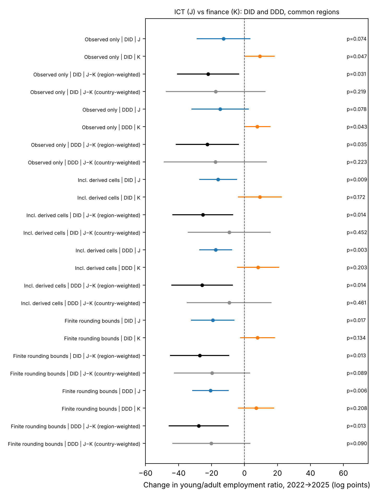
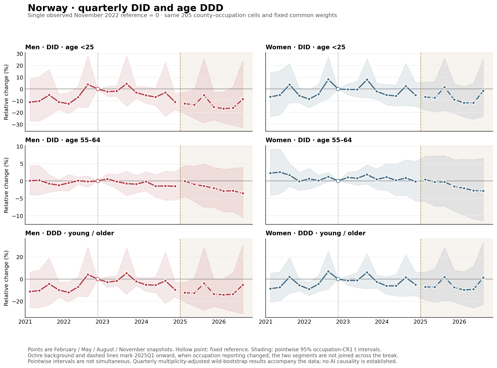
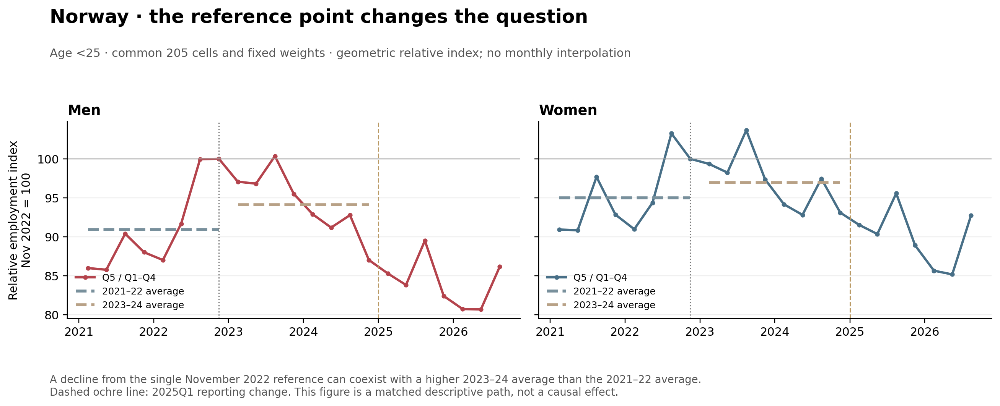
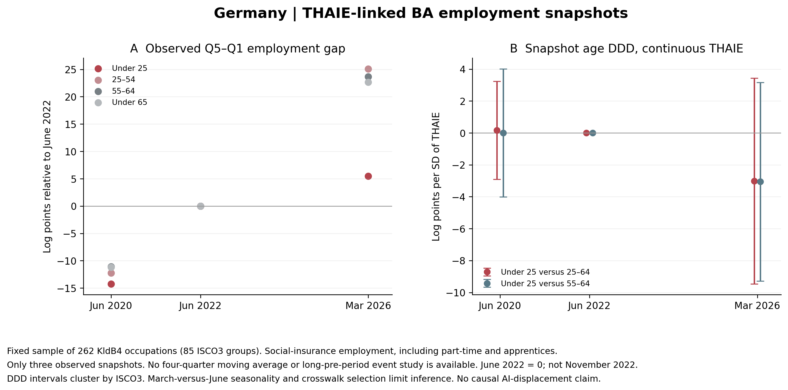

AI, labour and social policy · European regions · Working paper
Uneven exposure, uneven adjustment: multi-pathway disparities from AI exposure across European regions
Youngsam Chun · KT Responsible AI Center and UNIST
Working paper draft Version 26 November 2026 · Free official sources · THAIE exposure scores · Exploratory, not causal
Core argument. AI exposure in Europe is unlikely to arrive as one aggregate employment shock. The emerging evidence points instead to several partially independent pathways along which existing disparities widen, namely core and periphery regions, the labour-market entry path, gender-segregated occupations, and the capacity of regions to turn exposure into innovation.
Generative AI is often discussed as an aggregate labour-market shock. This paper argues that, in Europe, its consequences are better described as a set of distributional pathways. We combine a task-based, time-horizon AI exposure measure (THAIE) applied to 2022 occupational composition with annual employment for 208 NUTS-2 regions in 27 EU countries, a 2022 to 2025 comparison of youth-to-adult employment ratios in information and communication (NACE J) and finance and insurance (NACE K) across 202 regions, and higher-frequency national sources. Exposure is concentrated in more productive activities, with 6.60% higher real value added per worker for each 0.01 THAIE, although this association weakens after multiple-testing correction. Region-level difference-in-differences estimates show no robust relative youth decline in the most exposed regions. The youth-to-adult ratio in ICT nevertheless fell by 14.8% relative to the rest of the regional economy, while that in finance rose by 9.7%, and the ICT minus finance contrast of −22.3% (p = 0.014) is sensitive to giving countries equal weight. Read against recent literature, the evidence is consistent with adjustment that is concentrated in specific industry, age and occupation cells rather than in regional aggregates. We organise the implications around five pathways, namely core and periphery, the entry path, gender, political and institutional conflict, and innovation and diversification capacity. All results are exploratory and do not identify a causal AI effect.
From an aggregate shock to multiple pathways of disparity
Evidence on the labour-market effects of generative AI has moved quickly since 2023. The clearest early signal comes from US payroll data, where employment of workers aged 22 to 25 in AI-exposed occupations stood 19% below the path of less exposed peers by mid-2026, mainly through reduced hiring rather than increased separations (Brynjolfsson, Chandar and Chen, 2026). European aggregate data are more ambiguous. Euro-area youth employment fell by 18.6% in ICT between the first quarters of 2023 and 2026, yet the ECB concludes that this pattern cannot yet be attributed to generative AI (Chaloupka and Dias da Silva, 2026).
This paper starts from an observation that reconciles these findings. Occupational exposure in Europe is widely distributed, whereas the capacity to adopt AI productively and the costs of adjustment are not (Kogler and Salotti, 2026). Exposure therefore need not produce a uniform regional employment shock. It can instead operate through several pathways, each of which interacts with a pre-existing disparity. We distinguish five such pathways.
Region (core and periphery). Whether a region can convert exposure into productivity and new activities, or mainly absorbs substitution pressure.
Path (labour-market entry). Whether junior tasks, through which young workers enter careers, are automated before experienced work is.
Gender. Whether occupational segregation places women in more exposed and less AI-using roles.
Political and institutional conflict. Whether concentrated losses translate into distributive conflict, discontent and institutional friction.
Innovation and diversification capacity. Whether weaker entry pipelines and uneven adoption erode the human-capital base for science, technology and regional diversification.
The paper makes three contributions. First, it provides an open, source-documented regional observatory of AI exposure and employment across EU regions from a fixed 2022 baseline. Second, it shows that the most exposed regions display no robust relative youth decline, while the ICT industry shows a youth-ratio decline that finance does not share, which locates any adjustment in industry and age cells rather than in regions. Third, it organises the recent literature into a pathway framework that clarifies which disparities are empirically supported, which are plausible but untested, and which remain data gaps, such as migrant and ethnic disparities.
2 · Literature review
Five pathways in recent research
2.1 Region: exposure is diffuse, capacity is concentrated
Two mapping studies place AI exposure differently from earlier automation waves. Cnossen and Koster (2024) find that AI exposure is highest in high-skilled regions, whereas robot and software exposure is highest in regions with lower and middle education. Kogler and Salotti (2026) describe a spatial paradox, in which exposure and worker-level use are widespread while AI patenting and firm-level adoption remain concentrated in high-GDP, human-capital-intensive hubs, separated from exposure by an implementation gap. OECD (2026) reports that regions in the top national quintile of tertiary-educated residents have 52% of employment highly exposed to generative AI, against 42% elsewhere. Firm adoption follows a north-south and east-west gradient, with fewer than 7% of firms in Romania, Bulgaria and Poland reporting AI use, and city regions show a premium (Oxford Economics, 2026). Before generative AI, regional AI exposure was on average positively associated with employment over 2011 to 2018 (Guarascio, Reljic and Stöllinger, 2023). Their later cluster analysis argues that regions with strong innovation systems may gain, while peripheral regions face structural barriers that could widen EU disparities (Guarascio, Reljic and Stöllinger, 2025).
2.2 Path: the entry rung of the career ladder
The strongest causal-leaning evidence concerns early-career workers. In US administrative payroll data, declines concentrate among 22 to 25 year olds in exposed occupations, in occupations where AI automates rather than augments, and operate through hiring (Brynjolfsson, Chandar and Chen, 2025, 2026). In Europe, jobs held by women, highly educated and younger workers are more exposed, yet within occupations the least experienced workers gain most in productivity from AI support (Nurski and Ruer, 2024). The net effect on entrants is therefore theoretically ambiguous, combining a levelling channel and a substitution channel. Euro-area data show youth unemployment rising relative to total unemployment and particularly pessimistic job-search assessments among tertiary-educated young people (Chaloupka and Dias da Silva, 2026).
2.3 Gender: segregation shapes exposure and use
Using harmonised microdata for 84 countries, the ILO (2026) finds that female-dominated occupations are almost twice as likely to be exposed to generative AI as male-dominated occupations, at 29% against 16%, and that 16% of female-dominated occupations fall in the highest exposure categories against 3% of male-dominated ones. The refined ILO and NASK index reports that women use AI tools at a 25% lower rate than men (ILO and NASK, 2025). Women are thus overrepresented where exposure is high and underrepresented where complementary use and AI-related employment are growing.
2.4 Political and institutional conflict
The closest precedent is the robot shock. Exposure to automation raised support for radical-right parties in Western Europe from the late 1990s to 2016, with lower satisfaction with government and democracy among exposed individuals (Anelli, Colantone and Stanig, 2021). The evidence is not uniform. Subjective automation threat has been associated with more left and less populist-right support across 15 countries (West European Politics, 2024). Generative AI differs in whom it reaches. Exposure falls on graduates, young entrants and clerical women rather than on male manufacturing workers, so its political expression may be intergenerational and status-based rather than a replication of the manufacturing backlash. We treat this as a hypothesis.
2.5 Innovation and diversification capacity
Evolutionary economic geography predicts path dependence. A local ICT knowledge base is a key condition for regions to diversify into AI inventing (Xiao and Boschma, 2023). However, recent evidence suggests that AI raises regional innovative activity while reducing its reliance on pre-existing related knowledge (D'Alessandro, Santarelli and Vivarelli, 2026), which would open a window for latecomer regions. Europe's AI economy is mainly service-based and positions Europe largely as an importer and user of AI applications (Kogler and Salotti, 2026). This raises the possibility that productivity rents accrue outside the region.
2.6 Gaps
Three gaps motivate this paper. Regional European evidence on generative-AI-era outcomes remains scarce relative to US evidence. Migrant and ethnic disparities in AI exposure have not, to our knowledge, been estimated systematically at the European regional level. The long-run link from weakened entry pipelines to regional research and innovation capacity is theorised but untested.
Recent employment evidence, 2025–2026
Hiring flows, employment stocks and workplace productivity need separate comparisons. Exposure indices and age definitions also differ.
Broad displacement is not evident, but German youth employment and European entry hiring show warning signals.
Germany uses full-time ages 20–24 versus 25–64, continuous exposure and a long pre-period. Our Norwegian age groups, score, fixed cells and November reference differ.
AI assistance raises customer-support productivity by 15% on average, with larger gains for novices.
One workplace setting, not an aggregate employment effect or a replication of our cross-sectional productivity association.
The March 2026 Danish revision is titled Still Waters, Rapid Currents, previously Large Language Models, Small Labor Market Effects. Working papers and policy reports remain distinct from peer-reviewed evidence.
3 · Methodology
Data, measures and estimation
3.1 Data
The core panel contains annual employment for 208 NUTS-2 regions in 27 EU countries from Eurostat Labour Force Survey tables, complemented by national occupation tables. Industry-by-age comparisons use Eurostat regional employment by NACE section and age (lfst_r_lfe2en2) for ages 15 to 24 and 25 to 64, 2022 and 2025. Quarterly national series, monthly Swedish county data and a new UK ONS payroll extract are kept as separate higher-frequency panels and are never pooled with the annual panel. Suppressed and missing cells remain missing; no cell is imputed and no national share is used to fill a region.
3.2 Measures
Exposure. THAIE scores rate ISCO-08 three-digit occupations by the share of tasks that a 2025 AI capability benchmark can complete within a given time horizon. Regional exposure is the employment-weighted mean over disclosed, mapped occupations in 2022, and regions are ranked into national-sample quintiles that are frozen at 2022. One- and two-digit scores are coarse means of linked three-digit scores.
Employment indices. Each series is divided by its source-specific 2022 baseline.
Indexrt = 100 × Ert / Er,2022
Age-ratio change. For region r and industry s, the outcome is the change in the log ratio of young to adult employment. The triple difference subtracts the same change in the rest of the regional economy.
DIDrs = 100 × [ln(Yrs,2025/Ars,2025) − ln(Yrs,2022/Ars,2022)]DDDrs = DIDrs − DIDr,TOTAL−s. Y is employment aged 15 to 24 and A is employment aged 25 to 64. Some youth cells are derived from published 15 to 64 totals minus the published adult group; these accounting-derived cells are not official observations and are flagged.
3.3 Estimation and inference
The regional design compares THAIE Q5 regions with Q1 to Q4 regions, using 2020 to 2022 as the pre-period and 2023 to 2025 as the post-period, with region and country-by-year fixed effects and fixed 2022 employment weights. Industry contrasts average region-level DID and DDD values. Inference uses country-clustered CR1 errors with restricted wild sign-flip bootstrap p-values (full enumeration when there are at most 12 clusters, otherwise 9,999 draws), together with leave-one-country-out and equal-country-weight diagnostics. Holm and Benjamini-Hochberg corrections are reported for the relevant families.
3.4 Mapping evidence to pathways
Each pathway is matched with the evidence this paper can provide. The region pathway is tested by the Q5 versus Q1 to Q4 regional DID. The entry pathway is tested by age-specific and age-ratio estimates by industry. The gender pathway is described with sex-specific series, without an estimated gap in this version. The political and innovation pathways are discussed from the literature only.
3.5 Data availability
Requested comparisons and what the acquired free sources actually support
Requested feature
Supported evidence
Boundary
Monthly, from 2020
Swedish counties, actual employment by age and sex
All occupations, grouped by regional exposure; not software employment
European occupation exposure quintiles
Annual Eurostat national occupation tables
ISCO1 broad ages or ISCO2 ages 15–64; no monthly occupational cells
Software developers
UK SOC2020 2134; Sweden SSYK2512
Annual, exact occupation series lack the requested age-by-month cross-tabulation
Software-related age profiles
Sweden native SSYK251, annual by county, age and sex
Broader than software developers, not interchangeable with SSYK2512
Additional regional software data
Finland ISCO251, annual regional counts by sex
Broader software/application group; no detailed age split
22–25, 26–30, 31–34, 35–40, 41–49, 50+
Actual source bands are displayed in the controls
Exact requested cut-offs are not acquired; no single-age allocation or relabelling
Occupation fixed, five exposure strata
Age paths within a native occupation
A single fixed-score occupation cannot be divided into five exposure quintiles
UK in regional Eurostat panels
New ONS extract displayed separately through June 2026
Not merged with incompatible EU age panels; classification and area changes are flagged
Show the requested age definitions without substituting them
22–25 · 26–30 · 31–34 · 35–40 · 41–49 · 50+
All six exact requested definitions are unavailable jointly with monthly occupation and regional sex counts in the acquired sources. The controls below use observed bands only. The monthly Swedish young group is 20–24; the annual Swedish young group is 16–24. They are not the same population.
4 · Results
Adjustment concentrates in cells, not in regional aggregates
Three findings to read together
Evidence reviewed on 26 November 2026. These are an exploratory association, a youth-employment signal and a design diagnostic. They do not establish three causal effects of AI.
Finding
Estimate and scope
Strength of evidence
Exposure and productivity coincide
EU27, 511 country–industry cells. A 0.01 increase in THAIE is associated with 6.60% higher real value added per worker, conditional on country and industry effects and weighted by 2022 employment.
Nominal p = .000653; 95% CI 3.15–10.15%. Across the retrospective 320-coefficient family, BH q = .0427 but Holm p = .2076. Cross-sectional association, not an adoption effect.
A youth-relative weakening signal
Norway, the same 205 county–occupation cells and fixed weights. Against November 2022, youth Q5 versus Q1–Q4 DID in November 2024 is −11.10% for men and −5.26% for women. Youth versus ages 55–64 DDD is −9.71% and −5.08%.
Men’s youth quarterly wild-bootstrap p = .0133 becomes Holm p = .1995 across 15 quarters. Selected eight-county, two-digit occupational proxy; no robust causal displacement conclusion.
The time window changes the answer
Same cells and weights. Youth weighted-log endpoint contrasts for November 2022–November 2025 are −17.60% for men and −11.10% for women. Comparing 2021–2022 with 2023–2024 averages gives +3.49% and +2.05%.
Different endpoints and averaging windows define different estimands. County-by-time controls change the latter to +3.33% and +1.29%. A sensitivity diagnostic, not causal attribution.
4.1 Exposure is concentrated in more productive activities
Across 511 country-industry observations in 27 EU countries, a 0.01 higher THAIE is associated with 6.60% higher real value added per worker after country and industry fixed effects (two-way clustered 95% interval 3.15% to 10.15%, p = 0.00065, partial weighted R² = 0.054). In the retrospective inventory of 320 coefficients the association has BH q = 0.0427 but Holm p = 0.2076, and the incremental THAIE coefficient is not significant conditional on content-only exposure. The association places exposure in productive activities and does not establish that AI raised productivity.
4.2 Region pathway: no robust relative decline in the most exposed regions
Table 1. Regional DID, THAIE Q5 versus Q1 to Q4, 203 NUTS-2 regions in 19 identifying countries
Outcome
Relative change
Wild-bootstrap p
Holm p
Youth employment, 15 to 24
+2.69%
0.0746
0.2238
Older employment, 55 to 64
+1.51%
0.4150
0.8300
Youth-to-older ratio
+1.34%
0.4978
0.8300
None of the primary outcomes is significant at 5%. Joint pretrend p-values are 0.3694, 0.3542 and 0.7050, which do not verify parallel trends. The point estimates are, if anything, positive for youth in the most exposed regions. This is consistent with exposed regions being the high-skill core described in Section 2.1, where any substitution in specific cells may be offset by regional demand.
4.3 Entry pathway: an industry-specific youth-ratio decline
In high-exposure industries over the short window, employment aged 55 to 64 rose by 5.41% in relative terms (wild p = 0.0003), while that aged 15 to 24 changed by −1.20% (p = 0.4064). Much of the falling age ratio therefore reflects older-worker expansion that follows a pre-existing trend. With a common linear industry trend the long-window youth estimate is −6.12% (p = 0.0130), which depends on a retrospective counterfactual choice.
Table 2. Change in the youth-to-adult employment ratio, 2022 to 2025, 202 common regions in 33 countries (log points converted to %)
Contrast
Relative change
Wild-bootstrap p
ICT (J), DID
−14.76%
0.0093
Finance and insurance (K), DID
+9.71%
0.1724
J minus K, DID, regions weighted equally
−22.30%
0.0141
J minus K, DDD, regions weighted equally
−22.65%
0.0141
J minus K, DID, countries weighted equally
−8.82%
0.4520

Figure 1. Youth-to-adult ratio change, ICT versus finance, 2022 to 2025. Points, estimates; bars, 95% intervals.
Dropping one country at a time keeps the J minus K contrast between −28.1 and −20.7 log points, with p-values between 0.0037 and 0.026. The contrast loses significance when each country receives equal weight, because countries with many regions, such as Italy, dominate the regional average. The ICT decline is therefore not shared by finance, the other highly exposed knowledge-intensive industry, and cannot yet be attributed to AI exposure rather than to industry-specific cycles, hiring structures or post-pandemic normalisation.
4.4 Gender pathway: descriptive evidence only
Sex-specific series are available in the annual occupational panel and in the Swedish monthly case, and can be compared in the interactive evidence below. This version does not estimate a gender gap in adjustment. Source categories are women and men and do not measure gender identity.
4.5 Interactive evidence and detailed estimates
Every explorer states its frequency, exposure unit and population. Chart data and SVG files can be downloaded from the chart controls.
01 · Europe-wide annual overview · 208 NUTS-2 regions
These ranks measure the disclosed and mapped part of regional employment. The support screen is a sensitivity check, not a workforce-coverage threshold; original quintile cutoffs remain fixed. Inspect every region’s occupational support.
The full descriptive cohort has 208 NUTS-2 regions. The 135-region support sensitivity uses the same ages and frozen quintile definitions. Country and individual-region views are subsets. Incomplete public observations remain unavailable; broad age totals overlap.
02 · Annual European occupational evidence · Age and sex
03 · Quarterly evidence · Available national sources
04 · Monthly regional evidence · United Kingdom
05 · Occupational categories · Annual country sources
Europe-wide regional coverage first. The default requests monthly European NUTS-2 coverage and states explicitly where observations remain unavailable. Switch to the observed annual European panel or the newly collected UK monthly payroll series. Software occupations remain separate source selections; payroll totals are not software jobs.
06 · Supplementary monthly case · Sweden
Monthly regional exposure comparisons do not identify the exposure of the individual workers being counted. No causal AI interpretation is attached to the November 2022 marker.
07 · Supplementary annual case · Sweden
The occupational sample is restricted to deterministic SSYK3-to-ISCO3 links. The broad native group 251 is ambiguous at this level and remains outside these quintile totals, while its native age profile is shown separately below.
08 · Statistical evidence and robustness
The strongest retained association concerns productivity, not a demonstrated AI displacement effect. Across 511 country-industry observations in EU27, a 0.01 higher THAIE is associated with 6.60% higher real value added per worker after country and industry fixed effects, using 2022 employment weights. Its nominal two-way clustered 95% interval is 3.15% to 10.15%, p=0.00065, partial weighted R²=0.054.
Comparison
Estimate
Inference
Interpretation
Exposure and productivity
+6.60% per 0.01 THAIE
Two-way p=0.00065
Cross-sectional association, not an AI productivity gain
Older employment in high sectors, short window
+5.41%
Country wild p=0.0003
Expansion follows a pre-existing trajectory
Youth/older ratio, high sectors
−6.27% short; −1.63% long
Wild p=0.0055; 0.2432
Pre-period sensitive; no repaired short-window two-way p
Regional Q5 versus Q1–Q4 age ratio
+1.97%
Wild p=0.3885
No detected relative decline in the prior supported regional sample
In the expanded retrospective 320-row coefficient inventory, the productivity association has BH q=0.0427 but Holm p=0.2076. Rows include repeated baselines and dependent sensitivities, not 320 independent preregistered hypotheses. Conditional on content-only exposure E, the incremental THAIE coefficient is not significant. Full correction families, null results and limits remain in the downloadable report.
Existing statistical review, 24 November 2026. Annual country-industry analysis, separate from the newly added monthly regional explorer.Download publication tables and figures
Detailed regional DID, identification and support audit
A new retrospective analysis compares regional THAIE Q5 with Q1–Q4 using three annual pre-period observations (2020–2022) and three post-period observations (2023–2025). The balanced sample contains 203 NUTS-2 regions in 19 identifying countries. Region and country-by-year fixed effects are included, with fixed 2022 employment weights. The annual post-2023 indicator approximates the hypothesised November 2022 event; it cannot locate an exact monthly discontinuity.
Outcome
Relative DID change
Country wild-bootstrap p
Holm p, three primary outcomes
Youth employment, ages 15–24
+2.69%
0.0746
0.2238
Older employment, ages 55–64
+1.51%
0.4150
0.8300
Youth-to-older employment ratio
+1.34%
0.4978
0.8300
None of the three primary outcomes is significant at 5% under the 9,999-draw restricted country wild bootstrap. The age-ratio estimate is algebraically equivalent to a stacked age DDD with the same paired weights and saturated age-specific fixed effects; this equivalence was checked numerically.
Identification diagnostics use the stricter 2018–2025 balanced sample of 193 regions in 18 countries. Joint pretrend p-values are 0.3694 for youth, 0.3542 for older workers and 0.7050 for their ratio. A pre-AI placebo split at 2020 yields p-values of 0.6376, 0.6409 and 0.6360. That placebo overlaps COVID and is only a confounding diagnostic. Failure to reject these tests does not verify parallel trends or rule out economically meaningful effects.
The unadjusted long-window youth estimate is +2.75% (p = 0.0476), but its Holm p across the nine effect specifications is 0.4284. With a group-specific linear trend, the youth estimate is +3.55% (p = 0.2065). Thus a claim of regional youth displacement is not robustly supported here. These regional estimands differ from the industry comparisons in findings 2 and 3.
Exposure is not randomly assigned and actual AI adoption is not observed. Public occupational coverage and historical regional-boundary consistency remain unresolved. Concurrent regional industrial shocks, migration and the limited number of informative country clusters remain identification concerns. The evidence supports a statement about conditional employment differences, not a demonstrated causal AI effect or proof of no effect. A credible monthly causal design still requires comparable adoption information and sufficiently long pre- and post-period observations.
Occupational-support and inference audit
Regional scores condition on disclosed, mapped occupations. Some regions have only one contributing occupation, including DEB2 in Q5. A mapping fraction of 100% within disclosed cells is not full workforce coverage. The descriptive 208-region cohort is retained with provisional ranks; its support-screened sensitivity contains 135 regions and preserves the original quintile cutoffs.
Annual regional DID
Regions
Youth change
Wild-bootstrap p
Youth/older ratio change
Wild-bootstrap p
Unfiltered balanced sample
203
+2.689%
0.0746
+1.345%
0.4978
At least 50 published mapped occupations
107
+1.876%
0.2783
+1.556%
0.5498
The 50-occupation screen diagnoses sparse support; it does not certify employment coverage. Both samples keep frozen 2022 quintile cutoffs. Statistical significance is not stable across weighting years. Country-CR1 t intervals and restricted wild-bootstrap p-values use different approximations: the primary youth t interval excludes zero although its wild p is 0.0746. The latter is used for the stated significance assessment. Joint pretrend rows report joint p-values without attaching a single coefficient or confidence interval.
Norwegian dynamic estimates and the reference-period diagnostic
Under 25 versus ages 55–64, by sex. The fixed cohort contains 205 county–occupation cells in eight counties. Main dynamic models use county–occupation and county–measurement-quarter effects with fixed four-group 2022 harmonic weights. Quarterly observations are measured in February, May, August and November; the reference is the observed November 2022 value. The post-2025 reporting regime is marked separately. Exposure is a two-digit occupational proxy built from fixed national three-digit composition, not observed AI adoption.

Pointwise intervals do not adjust for the full set of quarterly tests. Multiple-testing adjustments weaken the evidence. November 2025 youth DID is −15.34% for men and −9.05% for women; DDD is −13.55% and −7.57%. The reporting change prevents a clean attribution of later changes to AI.

The matched-reference graph and dynamic regressions use different estimands. Percent effects are 100 × (exp(coefficient) − 1), not percentage-point effects. Sex-specific estimates alone do not test whether effects differ by sex.
Germany · THAIE-linked employment gaps and age DDD · observed snapshots
Partial implementation of the EconPol comparison structure, not a reproduction of its full-time 20–24-year-old sample. Three BA national snapshots are available: June 2020, June 2022 and March 2026. The fixed cohort contains 262 KldB4 occupations mapped unambiguously to 85 ISCO3 groups under both official crosswalk editions. It covers 19.22% of German social-insurance employment in June 2022. The exposure measure is our THAIE. This selected subset does not represent all German employment.
Panel A compares Q5 with Q1 by age, relative to June 2022. Panel B estimates continuous-exposure age DDD using the conditional profile likelihood of Poisson employment counts, with occupation-by-time, age-by-time and occupation-by-age effects. Uncertainty clusters by ISCO3. The main contrast is under 25 versus ages 25–64; ages 55–64 provide a supplementary comparison.

March 2026 versus June 2022
Log points per SD
95% CI, log points
Relative change
p
Holm p, four tests
Under 25 versus 25–64
−3.017
−9.461 to +3.427
−2.97%
.3545
1.000
Under 25 versus 55–64
−3.061
−9.276 to +3.155
−3.01%
.3303
1.000
Neither contrast is statistically significant. A positive Q5–Q1 youth gap in Panel A can coexist with a negative age DDD when the adult exposure gap rises more. These are different comparisons, not evidence that youth employment necessarily fell in absolute terms.
The public age bands include workers under 20, part-time employees and apprentices. Age-specific full-time employment excluding apprentices cannot be reconstructed from separate margins. The source has no November 2022 observation for this selection. Missing quarters are not interpolated, and no four-quarter moving average is calculated. One COVID-period pre-observation cannot establish parallel trends; March-versus-June seasonality is unresolved. Additional BA downloads currently return HTTP 429, including the ordinary browser. Full report-style quarterly analysis remains unavailable pending the required joint table.
1. Productive activities are exposed, but exposure is not a productivity treatment
Our country–industry association places exposure in economically productive activities. The workplace evidence of Brynjolfsson, Li and Raymond (2025) makes complementarity plausible, including for novices, but cannot identify the mechanism behind our cross-section. Humlum and Vestergaard (2026) show why task change may precede changes in earnings or hours. Policy should evaluate adoption, training and task redesign together. Our exploratory coefficient neither measures AI-induced productivity gains nor demonstrates incremental validity beyond content exposure.
2. Entry may weaken before employment totals clearly diverge
The Norwegian fixed-reference youth signal is directionally consistent with EconPol 61, French hiring evidence and the US early-career pattern. It is not a replication because ages, exposures, populations and outcomes differ. French hiring and separation flows cannot be inferred from our employment stocks. Norwegian studies by Facius and Iacono and by Hernæs and Kostøl do not find robust displacement, and our multiple-quarter corrections also weaken inference. Monitor entry hiring, apprenticeships and mentoring, while evaluating interventions rather than assuming confirmed AI job loss.
3. Identification depends on the comparison, not the appearance of the curve
The matched Norwegian sample changes sign when November endpoints are replaced by pre/post averages; adding county-by-time effects changes the average-window estimates less. This is an ordered sensitivity comparison, not a causal decomposition. It echoes the Norwegian backdating evidence and the distinction between exposure and measured adoption in Denmark. Pre-specify windows, report dynamic and pooled estimates together, and separate the 2025 statistical regime. Longer pre-periods, adoption dates and hiring flows are priorities for a credible causal interpretation.
Additional regional mechanisms and hypotheses
The following pathways provide contextual hypotheses. They are not additional causal findings established by the selected estimates; regional, gender and institutional mechanisms require separate tests.
5.1 Region: an implementation gap rather than a regional shock
The lack of a robust detected regional youth decline, together with the concentration of exposure in productive activities, fits the spatial paradox reported by Kogler and Salotti (2026). Highly exposed regions are largely the high-skill core, and they are also where adoption capacity and complementary demand are concentrated. One hypothesis is that distributive risk may arise in peripheral regions with lower adoption bearing substitution pressure without the productivity gains, a pattern anticipated by Guarascio, Reljic and Stöllinger (2025). A regional exposure index alone cannot detect this; a test needs exposure interacted with firm adoption.
5.2 Entry path: weakening of the first rung
The ICT youth-ratio decline is directionally consistent with the US finding that adjustment works through hiring of entrants in automatable occupations, and the ECB's sectoral pattern for the euro area. The finance contrast cautions against reading this as a general exposure effect. If junior tasks are automated, the cost extends beyond current employment, because entry jobs are where tacit knowledge and firm-specific skills are acquired. A weaker entry rung can therefore produce a delayed shortage of experienced workers.
5.3 Gender: double disadvantage
The literature shows women overrepresented in exposed clerical and administrative work and underrepresented in AI use and AI-related occupations. Unless use gaps close, exposure without complementary use implies greater substitution risk and smaller productivity gains for women. Regions where employment is concentrated in public administration and business support may show the largest gender-specific exposure, which is a testable regional implication.
5.4 Political and institutional conflict
The robot-shock literature shows that concentrated economic losses can reduce trust in government and raise radical-right support. Generative AI exposure is concentrated on young graduates and clerical workers, so conflict may take the form of intergenerational distributive claims over jobs, housing and pension commitments, and of status frustration among graduates. In segmented labour markets with strong insider protection, hiring-margin adjustment falls almost entirely on outsiders, which may amplify these effects. These are hypotheses that our data do not test.
5.5 Innovation and diversification capacity
Two forces pull in opposite directions. Path dependence on ICT knowledge bases favours existing hubs, while evidence that AI loosens the reliance on related knowledge suggests new diversification opportunities for latecomer regions. Which force dominates depends on human capital. If entry pipelines into ICT weaken, and if young graduates move to hubs, peripheral regions may lose the very capacity they need to use that window. A further competitiveness concern is that, as a net importer of AI applications, Europe may capture a smaller share of the rents from AI-driven productivity.
5.6 Migrants and ethnic minorities
We found no systematic European regional estimate of AI exposure by migrant status or ethnicity. Migrant employment in Europe is concentrated in manual and in-person work, which may imply lower direct exposure but greater exposure to second-round effects through local demand. This remains a data gap that harmonised LFS extracts by country of birth could address.
5.7 Limitations
Exposure is not randomly assigned and actual AI adoption is not observed. Parallel trends cannot be verified, and the post-period overlaps post-pandemic normalisation, energy shocks and monetary tightening. Some industry-by-age cells are accounting-derived rather than observed, and small cells are noisy. Regional exposure conditions on disclosed occupations and is not full workforce coverage. The number of informative country clusters is limited. Specifications were developed sequentially, so reported corrections do not cover every specification tried.
5.8 Policy implications
Protect the entry rung through apprenticeships, entry-level hiring incentives and job redesign that keeps junior learning tasks, rather than relying mainly on unemployment insurance.
Target cohesion funding at organisational readiness and adoption capacity in lagging regions, not only at digital infrastructure.
Close gender gaps in AI use through training aimed at exposed clerical and administrative occupations.
Build a regional monitoring system that links exposure, firm adoption and hiring flows by age, sex and country of birth.
6 · Conclusion
Conclusion
Exposure is associated with productive activities, and selected Norwegian high-exposure youth cells show relative weakening against November 2022. Neither establishes a causal AI effect. The reversal under alternative time windows and the mixed recent Norwegian evidence make design sensitivity a substantive finding. Policy should monitor labour-market entry and complementary skill formation while collecting adoption timing and hiring flows. Europe-wide regional aggregates, selected national panels and workplace studies remain separate levels of evidence.
References
References
Anelli, M., Colantone, I., & Stanig, P. (2021). Individual vulnerability to industrial robot adoption increases support for the radical right. Proceedings of the National Academy of Sciences, 118(47). PMC8617521
Brynjolfsson, E., Chandar, B., & Chen, R. (2025). Canaries in the coal mine? Six facts about the recent employment effects of artificial intelligence. Stanford Digital Economy Lab. Link
Brynjolfsson, E., Chandar, B., & Chen, R. (2026). Canaries in the coal mine? Updated evidence through June 2026. Stanford Digital Economy Lab. PDF
Chaloupka, D., & Dias da Silva, A. (2026). Youth employment amidst cooling labour demand. ECB Economic Bulletin, 5/2026. Link
Cnossen, F., & Koster, S. (2024). The geography of new technology: Exposure to AI, software and robots in European regional labour markets. Italian Labour Law e-Journal, 17(2), 1–28. doi:10.6092/issn.1561-8048/20803
D'Alessandro, F., Santarelli, E., & Vivarelli, M. (2026). The interplay between AI and technological relatedness in shaping regional innovation in Europe (IZA Discussion Paper No. 18817). PDF
Guarascio, D., Reljic, J., & Stöllinger, R. (2023). Artificial intelligence and employment: A look into the crystal ball (LEAP Working Paper 11/2023). Luiss.
Guarascio, D., Reljic, J., & Stöllinger, R. (2025). Diverging paths: AI exposure and employment across European regions. Structural Change and Economic Dynamics, 73, 11–24. doi:10.1016/j.strueco.2024.12.010
International Labour Organization. (2026). Gen AI, occupational segregation and gender equality in the world of work (Research brief). Link
International Labour Organization & NASK. (2025). Generative AI and jobs: A refined global index of occupational exposure. ILO.
Kogler, D. F., & Salotti, S. (2026). The geography of artificial intelligence in European regions: Innovation, exposure and use. Regional Studies, 60(1). doi:10.1080/00343404.2026.2681659
Nurski, L., & Ruer, N. (2024). Exposure to generative artificial intelligence in the European labour market (Bruegel Working Paper 06/2024). Link
OECD. (2026). OECD regions and cities at a glance 2026. OECD Publishing. Link
Oxford Economics. (2026). The north–south regional divide in AI adoption (Research briefing). Link
Riccio, F., Staccioli, J., & Virgillito, M. E. (2025). European regional employment and exposure to labour-saving technical change (LEM Working Paper 2025/19). Sant'Anna School of Advanced Studies.
West European Politics. (2024). Perceived automation threat and support for populist and non-populist parties in 15 European countries. doi:10.1080/01402382.2023.2297601
Xiao, J., & Boschma, R. (2023). The emergence of artificial intelligence in European regions: The role of a local ICT base. The Annals of Regional Science, 71. doi:10.1007/s00168-022-01181-3
Falck; Fuest; Guo (2026-11). AI and the Labor Market Productivity Driver or Job Killer. EconPol Policy Report61. Primary source
Facius; Iacono (2026). Labour Market Consequences of Generative AI Early Evidence from Norway. CESifo Working Paper12752. Primary source
Hernæs; Kostøl (2026-06). Has AI Widened Employment Gaps Tracking Early-Career Employment by Occupational Exposure in Norway. IZA Discussion Paper18767. Primary source
Humlum; Vestergaard (2026-03-13). Still Waters Rapid Currents Early Labor Market Transformation under Generative AI. Revised working paper NBER33777. Primary source
Palladino; Bergeaud; Bertheau; Bunel; Degos (2026-10). Occupational exposure to generative AI firm adoption and labor market dynamics in France. LIFT Working Paper2026-02 and Banque deFrance note463. Primary source
Brynjolfsson; Li; Raymond (2025-02). Generative AI at Work. QJE1402 peer-reviewed. Primary source
Data sources (Eurostat, ONS, Statistics Sweden, Statistics Finland) are listed in the Appendix.
No individual records are published. Source-level suppressed cells remain suppressed. Code and aggregates are separately versioned; provider revisions and classification changes may alter future updates.